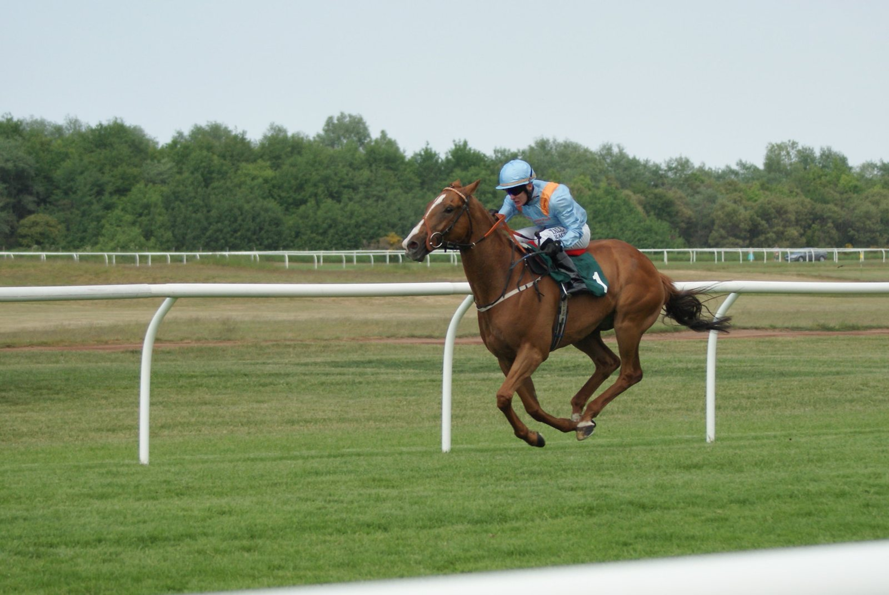

La Fasig-Tipton October Sale abre esta tarde en Lexington con un cuadro de 1.189 potros
La Fasig-Tipton October Sale, la segunda subasta de yearlings más importante del calendario norteamericano, arranca este lunes por la tarde en Lexington con un cuadro de 1.189 potros repartidos en cuatro sesiones consecutivas hasta el jueves 22 de octubre.

La casa de subastas afronta la cita con un informe interno de "confianza de mercado", en el que se apoya para fijar un target de ventas superior al de la edición anterior. En 2025, la October Sale cerró con una media por lote de 92.000 dólares y una mediana de 60.000, con un bote total agregado por encima de los 100 millones. La cifra media viene creciendo desde 2023, tras los dos años de parón derivados de la reconstrucción tras la pandemia.
El catálogo de 2026 incluye una porción creciente de potros de primera generación de los sementales de debut que ya han cuajado como ganadores de Grado 1: hijos de Essential Quality, Life Is Good y Rock Your World, entre otros. También figura un bloque significativo de hijas de yeguas que ya han pasado por el ring con premios superiores a 500.000 dólares. Fasig-Tipton no ha hecho públicos aún los hip numbers de los potros estrella de las primeras sesiones.
El resultado de la subasta tendrá efecto inmediato sobre el mercado europeo de yearlings, que ha cerrado hace apenas unos días la Tattersalls Book 2 por encima de los dos millones de guineas y el Goffs HIT Sale con el lote del Aga Khan como protagonista. Para los compradores internacionales, la October Sale de Lexington es la última ventana del año para completar cuadras con lotes norteamericanos antes del cierre fiscal.
Por Martín Larrañeta